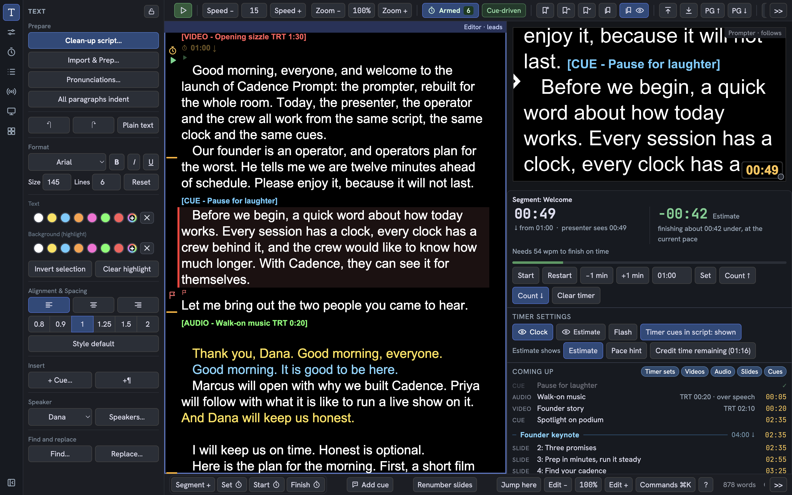
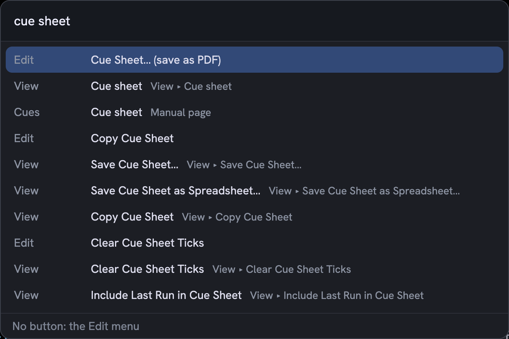

Operators
Prep in minutes. Run the show with your hands on it. A clean interface built around the live bar, a command palette and Stream Deck control, with a phone remote for the moments you are away from the desk Beta.
We keep putting up with the same prompter pain points because we assume they come with the job. They do not. Cadence Prompt is the prompter, rebuilt for the whole room: prep in minutes, run the show with your hands on it, and a crew that sees the same clock you do.

I built Cadence Prompt after years of working around the same bugs. Read why →
Prep in minutes. Run the show with your hands on it. A clean interface built around the live bar, a command palette and Stream Deck control, with a phone remote for the moments you are away from the desk Beta.
Walk on knowing your words, your pace and your time: each speaker in their own style, a marker you can follow, and a clock you can trust.
One show, one source of truth: timers, a live list of the cues coming up, a script page they can read on their own phone and send suggestions from Beta, and faster script handling that saves time and money.
Cadence runs without a Stream Deck. It runs best with one. Keys for the tools you reach for, dials for speed, text size and bookmarks, a touch strip for the clock: your hands stay on the show. Any model works, the Stream Deck, XL, + and + XL, and the two with dials give you the full set. Every key and dial has a function key or a button that does the same thing.
Cadence Prompt teaches itself. Two Welcome scripts come with the app: you read them on the prompter and try each feature at a practice stop, with a Help search and a built-in manual behind them.

Operator · Crew
From the writer's file to the prompter, in a fraction of the time.
Operator
Calm, fast control for the person at the desk.
Crew · Presenter
One clock and one cue list for the whole room.
Presenter
Comfortable for the presenter, and every name said right.